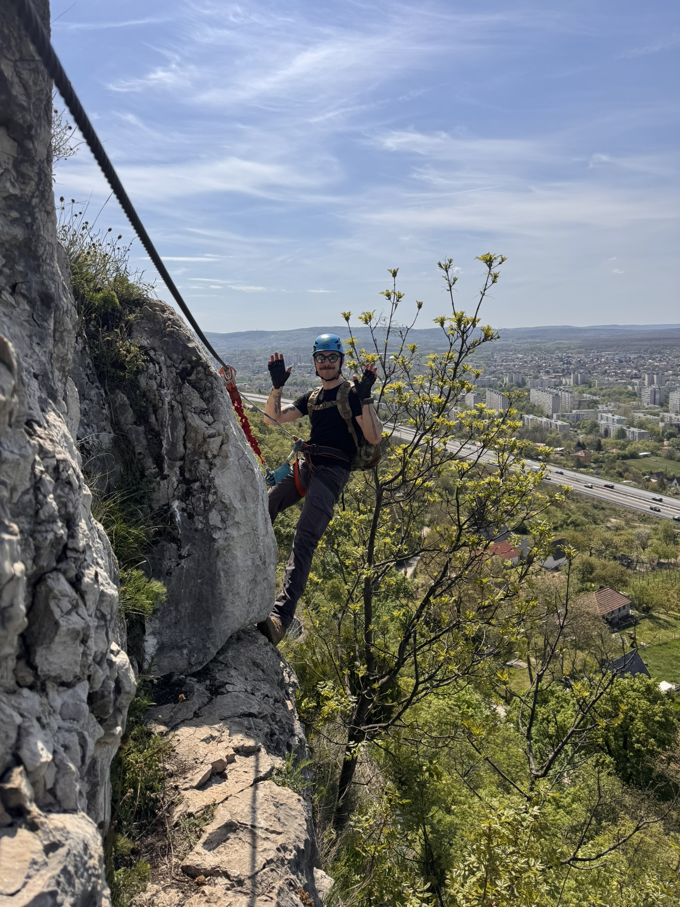

← BACK
ABOUT ME
Hi, I’m KOPI, a cybersecurity enthusiast who enjoys learning how systems work, how they break, and how they can be protected.
I’m interested in ethical hacking, Linux, networking, CTF challenges, web security, and hands-on labs. I like building things, testing things, and occasionally convincing computers to stop being dramatic.
Outside the digital world, I enjoy climbing and exploring places that are slightly less fragile than production servers.